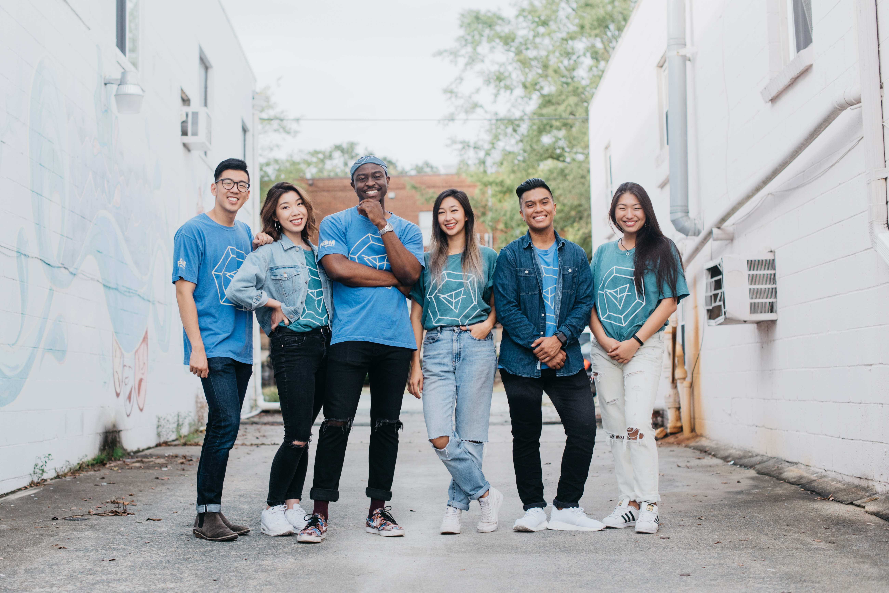

Staff
Alex Olosu - Executive Director
Olosu is currently the Executive Director for PRSM Season 3. He is responsible for overseeing the staff, managing event planning, providing the final judgement for teacher line-ups, and guiding this season’s overall direction. His dance affiliations include Fusion Dance Crew and The Break-Fast Club. ABDC was his inspiration to start dancing, began dancing in college (started off with Breaking), loves to freestyle, and enjoys attending Breaking events and jams. In addition to his dance life, he is currently a senior majoring in Psychology at NC State University. When he’s not dancing or directing PRSM, he is obsessing over soccer, listening to NPR, learning about stocks, or conducting Educational Psychology research at NC State. He loves his team very very very, must we say it again, very much!
Follow Olosu on Instagram InstagramSusan Mykalcio - Outreach Chair
Susan Mykalcio is the Outreach Chair for PRSM Season 3, responsible for community and teacher relations. She graduated from NC State where she majored in Business Administration Information Technology and minored in Chinese Studies and Art & Design. She currently works as a project manager on an events team in IT at Cisco Systems. Her dance affiliations include Fusion Dance Crew(with 2 years as Social Chair), Newbornz, and PRSM Season 2 staff. She is THE resident mother of PRSM and can be found at Carmen’s Cuban Cafe for salsa nights every Tuesday! Additionally, she extra af with her hobbies (e.g. rock climbing) and can cook a mean good meal.
Follow Susan on Instagram InstagramDanica Dy - Operations Chair
Danica Dy is the Operations Chair for PRSM Season 3, responsible for logistics and finances of the organization. She is currently a Junior at the University of North Carolina at Chapel Hill, studying Biology with minors in Chemistry and Medicine, Literature and Culture. Her Dance affiliations include I Rock With THE ONE and Moonlight Dance Crew. Beyond the dance community, she is involved with research, public health and community service. For Christmas, she would like a pair of Bose Wireless Noise Cancelling Headphones (SKU:5876115) as she would like to no longer have audio issues during PRSM meetings.
Follow Danica on Instagram InstagramMarissa Liu - Brand Chair
Marissa Liu is the Brand Chair for PRSM Season 3, leading overall marketing, brand strategy and social media. She currently works as a Collaboration Product Marketing Specialist at Cisco and studied Economics and Global Studies with a minor in Korean at the University of North Carolina at Chapel Hill. Her dance affiliations include Flying Silk Chinese Dance Troupe, Moonlight Dance Crew and Newbornz. Outside of dance, she is passionate about international service and STEAM development for underrepresented minority youth groups, having served abroad in South Korea and Peru as well as domestically with organizations like Families with Children from China. She’s a Hufflepuff poster child, her spirit animal is a unicorn, and she enjoys watching hula competitions and reading screenplays in her spare time.
Follow Marissa on Instagram InstagramZack Chan - Video Chair
Zack Chan is the Video Chair for PRSM Season 3 providing video and photography content for PRSM’s Instagram, Facebook, Youtube page, and website. He also helps distributes class footage to dancers who attend the workshops. He is currently a graduate student at Wake Forest University (WFU) in Winston-Salem, NC on track for a Masters in Accounting and will be working at KPMG in New York City starting next fall. His professional life sounds really boring because he wants income to fund his hobbies which include dance and photography! As a dancer, Zack has danced with Momentum Crew and Lost in Translation at WFU and a teacher at Sharon’s School of Dance in Winston-Salem. With photography, Zack focuses on portraiture, and has photographed artists, weddings, and models.
Follow Zack on Instagram Instagram{kind=link}
Joe Mejica - Design Chair
Joe Mejica is the Design Chair for PRSM Season 3, responsible for the creation of our graphics, merchandise, and marketing materials including flyers, hexes, and website. He is currently working at Cisco as a Network Engineer and studied Computer Science at Georgia State University in Atlanta, GA. His dance affiliations include Atlanta Filipino Student Association (ATL FSA), Movement as One Dance Company, Just Cuz Crew, and KamiKazi. Joe’s favorite dance style is ‘anything hard-hitting and/or anything that allows you to have a stank face.’ He can also been seen as an extra on the premiere episode of the new Step Up Series on YouTube Red. Aside from dance, he enjoys playing the guitar, driving his car, running Spartan Races, and making memes.
Follow Joe on Instagram InstagramLegacy Staff
Season 1
Season 2
Albert Zhu: Executive Director
Susan Mykalcio: Outreach Chair
Wunil Kim: Treasury Chair
Zack Chan: Photography Chair
{kind=link}
Tim Hwang: Design Chair